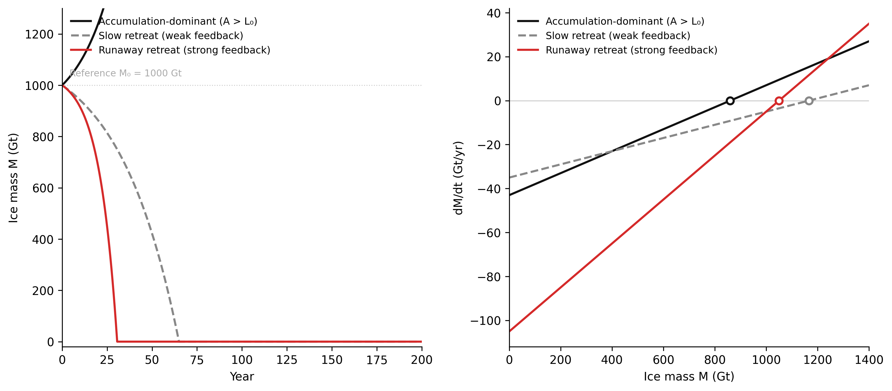
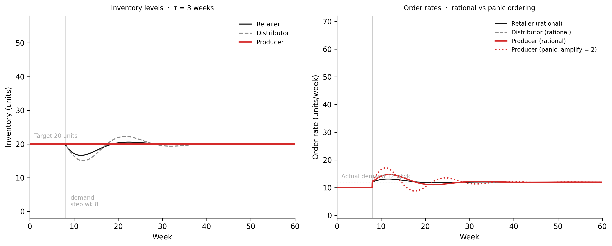

flowchart LR
S1["1 · Observation\nreference mode"]
S2["2 · Conceptual\nmodel + boundary"]
S3["3 · Causal loop\ndiagram"]
S4["4 · Stock-flow\ndiagram"]
S5["5 · Equations\n& code"]
S6["6 · Validation"]
S1 --> S2 --> S3 --> S4 --> S5 --> S6
S6 -->|"revise structure"| S2
style S1 fill:#f5f5f5,stroke:#111111,stroke-width:2px
style S2 fill:#f5f5f5,stroke:#111111,stroke-width:2px
style S3 fill:#f5f5f5,stroke:#111111,stroke-width:2px
style S4 fill:#f5f5f5,stroke:#111111,stroke-width:2px
style S5 fill:#f5f5f5,stroke:#111111,stroke-width:2px
style S6 fill:#fff3f3,stroke:#d52a2a,stroke-width:2px
8 Modelling and Simulation
From verbal description to running code — the craft of building stock-flow models
8.1 The puzzle
In 1972, a team of researchers at MIT published The Limits to Growth (Meadows et al. 1972) — a system dynamics model of the global economy and biosphere called World3. The model simulated population, industrial output, food production, pollution, and resource depletion from 1900 to 2100 using approximately 200 variables and 12 state variables. It was built using Forrester (1961) system dynamics methodology on a CDC mainframe.
The study’s “business as usual” scenario projected that industrial output per capita would peak around 2020 and then decline, driven by resource depletion and rising costs of pollution damage. The response from mainstream economics was dismissive. Henry Wallich of Yale called the work “nonsense.” Robert Solow of MIT, later a Nobel laureate, argued it was “bad science.” Nordhaus (1973) published a sustained methodological critique. The criticisms were mostly correct: the parameter values were rough, the economic mechanisms were simplified, and the model had no technological change scenario.
In 2021, Herrington (2021) published a comparison of World3’s projections against 50 years of actual data across ten variables — population, industrial output, food production, services, pollution, non-renewable resource use, and related welfare indices. The “business as usual” scenario tracked the actual data within a few percent on most variables through to 2020. The “stabilised world” scenario, which required sustained policy intervention, had diverged from the actual trajectory by the 1990s.
The critics were right on the details. The model was right on the trajectory.
The explanation is structural. World3 did not need to model every mechanism with precision. It needed to capture the dominant feedback loops: the balancing loop between population and food supply; the delay between resource extraction and depletion effects; the reinforcing loop between industrial capital and output; the second-order effects of pollution on agricultural productivity. These structural relationships are properties of the real system — they are not assumptions that better data would revise. Parameters drift and get updated as empirical knowledge improves. Feedback structures are harder to change, because they describe how the stocks of the system are actually connected.
This is the central lesson of the chapter: what makes a model useful is not the precision of its parameters. It is whether the model captures the dominant feedback structure of the system it represents. A model with the right loops and approximate numbers tells you something real about the future. A model with precise numbers and the wrong loops tells you nothing. The craft of modelling is identifying which stocks, which flows, and which feedback connections are load-bearing for the question you are trying to answer — and building those, with sufficient precision, and nothing more.
8.2 The modelling cycle
Building a model is not a single act. It is a cycle of six stages, and the cycle is revisited many times before a model is useful.
Stage 1: Observation. Identify the behaviour of concern. What oscillates, grows, collapses, or fails to reach its target? Look at a time series if one exists. The behaviour of concern — the reference mode — is what the model must reproduce before it can say anything about the future. A model that cannot reproduce the past has not earned the right to speak about the future.
Stage 2: Conceptual model. Describe in words the stocks, flows, and feedback connections that seem responsible for the behaviour. Draw the model boundary: what variables are endogenous (explained by the model) and what are exogenous (treated as given inputs)? Boundary decisions are made here, before any mathematics. The most consequential modelling errors are boundary errors — the dominant feedback loop is outside the boundary, so the model cannot reproduce the behaviour no matter what parameters you choose.
Stage 3: Causal loop diagram. Map the feedback loops. Identify which are reinforcing (same-sign products around the loop), which are balancing (odd-sign products), and where the significant delays lie. At this stage you are working with arrows and qualitative signs, not equations. The diagram is the argument. If it does not make sense diagrammatically, it will not make sense mathematically.
Stage 4: Stock-flow diagram. Translate the causal loops into stocks and flows with explicit functional relationships. Which quantities accumulate? What are the rates of change? How do stocks affect the flows that feed or drain them? This stage forces precision about the mechanism that the causal loop diagram left implicit.
Stage 5: Equations and code. Write the differential equations implied by the stock-flow diagram. Every stock becomes a state variable. Every inflow becomes a positive term in the rate equation; every outflow, a negative term. Implement the equations in code and run the simulation.
Stage 6: Validation. Test whether the model reproduces the reference mode from plausible initial conditions and parameter values. Vary parameters systematically and check whether the qualitative conclusions change. If the model fails validation, the problem is structural — go back to Stage 2, not Stage 5.
The cycle is not a linear procedure. Stage 6 regularly surfaces assumptions that were wrong in Stage 2. The return path from validation to conceptual model is not a failure; it is the mechanism by which the model improves.
Figure 7.1. The modelling cycle as a six-stage process. The return path from Stage 6 (validation) to Stage 2 (conceptual model) is not a failure mode — it is the mechanism by which the model improves. Most significant modelling errors are boundary errors made at Stage 2; they cannot be fixed by improving the equations at Stage 5.
Three examples will run through the chapter, each entering the cycle at Stage 1 with a behaviour of concern.
Earth. Athabasca Glacier in the Canadian Rockies has retreated approximately 1.5 km and lost more than 60% of its volume since 1900. The reference mode: monotonic retreat, accelerating in recent decades. The boundary decision: accumulation (net winter snowfall), ablation (summer melt), and the albedo feedback — less ice exposes darker rock and meltwater, which absorbs more solar radiation, which accelerates melt. Global temperature forcing is exogenous: a slow external driver rather than something the glacier model needs to explain.
Human. In Sterman (1989) beer game experiments at MIT Sloan, participants managing a three-node supply chain consistently produce large inventory oscillations — swings of 300–400% above and below target inventory levels — in response to a consumer demand increase of 10–20%. The behaviour of concern: oscillation that is much larger than the demand change that triggered it. The boundary: three inventory stocks, two pipeline delay stocks, an ordering policy at each node.
Data. A production ML pipeline serves loan decisions. Model accuracy falls below the acceptable threshold six weeks after a macroeconomic shock shifts the borrower population distribution. The behaviour of concern: a six-week lag between the real-world change and the detected accuracy failure. The boundary: three monitoring loops (feature drift detection, accuracy monitoring, data freshness) with different detection and response delays.
8.3 From verbal description to equations
The translation from a stock-flow diagram to differential equations follows three rules. Every stock becomes a state variable. Every inflow contributes a positive term to that variable’s rate of change. Every outflow contributes a negative term. The feedback enters through the functional relationships that express how flows depend on the current values of stocks.
Working through the glacier model makes this concrete.
Verbal description of the glacier system:
Ice mass accumulates through net annual snowfall on the glacier surface — precipitation that falls as snow in winter and does not melt over summer. This accumulation rate is primarily controlled by large-scale atmospheric circulation patterns and is treated here as approximately constant from year to year. Ice mass depletes through ablation: melt from solar radiation and warm air temperatures, calving at the glacier terminus where the ice reaches a valley or lake.
The critical feedback: as ice retreats, it exposes darker rock, moraine, and meltwater pools. Ice has a high albedo — it reflects roughly 80% of incident solar radiation. Exposed rock and water reflect only 15–20%. When ice mass decreases, the proportion of the glacier surface covered by reflective ice falls. The glacier absorbs more solar energy. Ablation increases. Ice mass decreases further. This is a reinforcing loop: loss accelerates loss.
Causal loop diagram:
flowchart LR
M["Ice mass M"]
A["Surface albedo"]
R["Solar absorption"]
L["Ablation rate L"]
M -->|"+"| A
A -->|"−"| R
R -->|"+"| L
L -->|"−"| M
style M fill:#e8f4ff,stroke:#111111,stroke-width:2px
style A fill:#f5f5f5,stroke:#111111,stroke-width:2px
style R fill:#fff3f3,stroke:#d52a2a,stroke-width:2px
style L fill:#fff3f3,stroke:#d52a2a,stroke-width:2px
Figure 7.2. Causal loop diagram for the glacier albedo feedback. Sign product around the loop: (+)(−)(+)(−) = positive — reinforcing. Trace the loop: less ice → less albedo → more solar absorption → more ablation → less ice. The loop amplifies mass loss. Labelling convention: a + arrow from X to Y means “more X causes more Y”; a − arrow means “more X causes less Y.”
Stock-flow diagram to equations:
The glacier has one stock: ice mass M (gigatonnes). One inflow: accumulation A (Gt/yr), treated as constant. One outflow: ablation L(M) (Gt/yr), a function of current ice mass.
The albedo feedback enters through the ablation function. At the reference ice mass M₀, ablation equals the baseline rate L₀. As ice mass falls below M₀, the albedo-weighted surface area shrinks, and ablation increases above L₀. The relationship is approximately linear near the reference state:
L(M) = L_0 + \alpha (M_0 - M)
where α is the albedo feedback coefficient (Gt/yr per Gt of ice lost). When M < M₀, the term α(M₀ − M) is positive, so L(M) > L₀. The glacier is losing ice faster than the baseline.
The differential equation follows directly from the stock-flow diagram:
\frac{dM}{dt} = A - L(M) = A - L_0 - \alpha(M_0 - M) = (A - L_0) + \alpha M - \alpha M_0
This is a linear ODE with equilibrium at:
M^* = M_0 - \frac{A - L_0}{\alpha}
- If A > L₀: the equilibrium M* is above the reference mass. The glacier grows to a higher steady state.
- If A < L₀: M* is below reference. The glacier retreats. Whether it stabilises at a lower equilibrium or collapses to zero depends on whether M* > 0.
- The feedback coefficient α determines both the response speed and the stability character. Because α appears with a positive sign in the rate equation, larger α makes the system less stable — a larger albedo feedback accelerates runaway once retreat begins.
Supply chain inventory equations:
The supply chain model has five stocks: retailer inventory I_r, distributor inventory I_d, producer inventory I_p, and two pipeline stocks P_r and P_d representing goods in transit between nodes. Each pipeline stock is a first-order material delay: goods enter when ordered and leave at rate P/τ, where τ is the fulfillment delay.
\frac{dP_r}{dt} = OR_r - \frac{P_r}{\tau}, \qquad \frac{dP_d}{dt} = OR_d - \frac{P_d}{\tau}
\frac{dI_r}{dt} = \frac{P_r}{\tau} - \min(I_r,\, d), \qquad \frac{dI_d}{dt} = \frac{P_d}{\tau} - \min(I_d,\, OR_r)
where d is consumer demand and OR_r is the retailer’s current order rate to the distributor. The ordering policy is the order-up-to rule: each node orders enough to cover current demand plus a correction proportional to the gap between target inventory I* and current inventory:
OR_r = \max\!\left(0,\; d + c\,\frac{I^* - I_r}{\tau}\right)
The correction term c · (I* − I_r)/τ is the feedback that causes oscillation. It is a rational response to inventory shortfall — order more to recover stock. But it amplifies the original demand signal upstream.
Incident management backlog:
An incident management system has one primary stock: the alert backlog B (number of open incidents). Incidents arrive at rate λ (alerts/hour). They are resolved at rate R(B), which depends on backlog: when B is small, engineers resolve incidents at their full capacity R₀; when B is large, alert fatigue sets in and effective resolution rate falls.
\frac{dB}{dt} = \lambda - R(B), \qquad R(B) = \frac{R_0}{1 + \beta B}
The term 1/(1 + βB) is a saturation function: as B grows, R(B) approaches zero. This makes visible a failure mode that is easy to miss in operational data: the system appears healthy at low load but exhibits runaway backlog growth above a threshold. The model does not require precise values of β to be useful. It requires the saturation relationship to be present at all.
8.4 Implementing in Python
The Euler method is the direct computational realisation of a differential equation. Its update rule states the differential equation in discrete time:
x(t + \Delta t) = x(t) + f(x, t) \cdot \Delta t
where f(x, t) is the rate of change — the right-hand side of the differential equation. The method is not the most accurate numerical integrator available. For smooth stock-flow systems without stiffness, it is adequate when Δt is sufficiently small. Its practical advantage is transparency: every line of the simulation corresponds to a term in the differential equation, and the reader can trace each mechanism directly.
Choosing Δt. The rule of thumb: Δt should be no more than one-quarter of the fastest time constant in the model. If the fastest feedback loop operates on an annual timescale, Δt = 0.1 yr is safe. The test: halve Δt and rerun. If the output changes materially, Δt was too large. For stiff systems — where fast and slow dynamics coexist in the same model — scipy.integrate.solve_ivp with an adaptive step-size integrator is the appropriate tool. The simulations in this book use Euler throughout; the relationship between Euler and higher-order integrators is covered in WH Maths Vol 8, Ch 1.
The glacier simulation below implements the three-scenario analysis from the previous section. Every term in the code corresponds to a term in the differential equation. The ablation variable is L(M); dM_dt is the right-hand side; the Euler update is the integration step. The max(0, ...) guard prevents ice mass from going negative — a physical constraint that the differential equation does not enforce but the simulation must.
Code
"""Glacier mass balance with albedo feedback — Chapter 7.
One stock: ice mass M (Gt). Inflow: accumulation A (constant).
Outflow: ablation L(M) = L0 + alpha*(M0 - M).
Three scenarios illustrate stable growth, stable retreat, and runaway collapse."""
import numpy as np
import matplotlib.pyplot as plt
# -- Named constants -----------------------------------------------------------
M_0 = 1000.0 # reference ice mass (Gt)
M_INIT = 1000.0 # initial ice mass (Gt)
T_END = 200.0 # simulation length (years)
DT = 0.1 # Euler time step (years)
COL_GROWTH = "#111111"
COL_RETREAT = "#888888"
COL_RUNAWAY = "#d52a2a"
# Scenario parameter sets: (A, L0, alpha, label, colour, linestyle)
SCENARIOS = [
(52.0, 45.0, 0.05, "Accumulation-dominant (A > L₀)", COL_GROWTH, "-"),
(45.0, 50.0, 0.03, "Slow retreat (weak feedback)", COL_RETREAT, "--"),
(45.0, 50.0, 0.10, "Runaway retreat (strong feedback)", COL_RUNAWAY, "-"),
]
def run_glacier(A, L0, alpha):
"""Euler simulation of the glacier mass balance model."""
steps = int(T_END / DT) + 1
t = np.linspace(0.0, T_END, steps)
M = np.empty(steps)
M[0] = M_INIT
for i in range(1, steps):
ablation = L0 + alpha * (M_0 - M[i - 1])
dM_dt = A - ablation
M[i] = max(0.0, M[i - 1] + dM_dt * DT)
return t, M
def dMdt(M_vals, A, L0, alpha):
"""Rate of change dM/dt at each value of M — for the phase portrait."""
return A - (L0 + alpha * (M_0 - M_vals))
# -- Run simulations -----------------------------------------------------------
t_arr = np.linspace(0.0, T_END, int(T_END / DT) + 1)
results = []
for A, L0, alpha, label, colour, ls in SCENARIOS:
_, M = run_glacier(A, L0, alpha)
results.append((M, label, colour, ls, A, L0, alpha))
M_phase = np.linspace(0, 1400, 600)
# -- Figure --------------------------------------------------------------------
fig, (ax_t, ax_p) = plt.subplots(1, 2, figsize=(11, 5), dpi=150)
# Left: M(t)
ax_t.axhline(M_0, color="#cccccc", linewidth=0.8, linestyle=":", zorder=0)
ax_t.annotate("Reference M₀ = 1000 Gt",
xy=(4, M_0), xytext=(4, M_0 + 28),
fontsize=8, color="#aaaaaa", va="bottom")
for M, label, colour, ls, *_ in results:
ax_t.plot(t_arr, M, color=colour, linestyle=ls, linewidth=1.8, label=label)
ax_t.set_xlabel("Year")
ax_t.set_ylabel("Ice mass M (Gt)")
ax_t.set_xlim(0, T_END)
ax_t.set_ylim(-20, 1300)
ax_t.legend(fontsize=8.5, frameon=False, loc="upper left")
ax_t.spines["top"].set_visible(False)
ax_t.spines["right"].set_visible(False)
# Right: phase portrait
ax_p.axhline(0, color="#cccccc", linewidth=0.8, zorder=0)
for M, label, colour, ls, A, L0, alpha in results:
rates = dMdt(M_phase, A, L0, alpha)
ax_p.plot(M_phase, rates, color=colour, linestyle=ls, linewidth=1.8, label=label)
# Mark equilibrium M* if it lies in [0, 1400]
if alpha > 0:
M_star = M_0 - (A - L0) / alpha
if 0 < M_star < 1400:
ax_p.plot(M_star, 0.0, "o", color=colour, markersize=6,
markerfacecolor="white", markeredgewidth=1.8)
ax_p.set_xlabel("Ice mass M (Gt)")
ax_p.set_ylabel("dM/dt (Gt/yr)")
ax_p.set_xlim(0, 1400)
ax_p.legend(fontsize=8.5, frameon=False)
ax_p.spines["top"].set_visible(False)
ax_p.spines["right"].set_visible(False)
plt.tight_layout(pad=1.8)
plt.savefig("_assets/ch07-glacier-simulation.png", dpi=150, bbox_inches="tight")
plt.show()
TipWhat to try
Find the critical feedback coefficient. For the slow-retreat scenario (A = 45, L₀ = 50), increase α from 0.03 toward 0.10 in steps of 0.01. At what value of α does the glacier switch from stabilising at a lower equilibrium to collapsing to zero? This threshold is the tipping point from Chapter 3 expressed in the model’s parameter space. Compare the phase portrait at the threshold value: what happens to the equilibrium point M*?
Add temperature forcing. Introduce a temperature anomaly that increases linearly:
T_anomaly = 0.025 * year. Add a temperature-driven ablation term:ablation = L0 + alpha*(M0 - M) + gamma * T_anomaly, wheregamma = 2.0. Run the accumulation-dominant scenario. At what year does it switch from net growth to net decline? How doesgammaaffect the answer?Test Δt sensitivity. The simulation uses DT = 0.1 yr. Rerun with DT = 1.0 yr and DT = 0.01 yr. Do the trajectories differ materially? At what step size do you see noticeable numerical drift? This is the practical meaning of choosing Δt to be less than one-quarter of the model’s fastest time constant.
import numpy as np
import matplotlib.pyplot as plt
# --- Try changing these parameters ---
# Scenario parameters: (A, L0, alpha)
# Increase alpha toward 0.10 to find the tipping point (What to try #1)
# Add temperature forcing by setting gamma > 0 (What to try #2)
# Change DT to test numerical sensitivity (What to try #3)
DT = 0.1 # Euler time step (years); try 1.0 or 0.01
T_END = 200.0
gamma = 0.0 # temperature forcing coefficient (try 2.0 for What to try #2)
M_0, M_INIT = 1000.0, 1000.0
SCENARIOS = [
(52.0, 45.0, 0.05, "Accumulation-dominant", "#111111", "-"),
(45.0, 50.0, 0.03, "Slow retreat (weak α)", "#888888", "--"),
(45.0, 50.0, 0.10, "Runaway (strong α)", "#d52a2a", "-"),
]
def run(A, L0, alpha):
steps = int(T_END / DT) + 1
t = np.linspace(0, T_END, steps)
M = np.empty(steps); M[0] = M_INIT
for i in range(1, steps):
T_anomaly = 0.025 * t[i] if gamma > 0 else 0.0
ablation = L0 + alpha * (M_0 - M[i-1]) + gamma * T_anomaly
M[i] = max(0.0, M[i-1] + (A - ablation) * DT)
return t, M
fig, (ax_t, ax_p) = plt.subplots(1, 2, figsize=(11, 5))
M_phase = np.linspace(0, 1400, 600)
for A, L0, alpha, label, color, ls in SCENARIOS:
t_arr, M = run(A, L0, alpha)
ax_t.plot(t_arr, M, color=color, linestyle=ls, linewidth=1.8, label=label)
rates = A - (L0 + alpha * (M_0 - M_phase))
ax_p.plot(M_phase, rates, color=color, linestyle=ls, linewidth=1.8, label=label)
if alpha > 0:
M_star = M_0 - (A - L0) / alpha
if 0 < M_star < 1400:
ax_p.plot(M_star, 0, "o", color=color, markersize=6,
markerfacecolor="white", markeredgewidth=1.8)
ax_t.axhline(M_0, color="#ccc", linewidth=0.8, linestyle=":")
ax_t.set_xlabel("Year"); ax_t.set_ylabel("Ice mass M (Gt)")
ax_t.set_title(f"Glacier mass balance (DT={DT}, γ={gamma})")
ax_t.legend(frameon=False, fontsize=8.5)
ax_t.spines["top"].set_visible(False); ax_t.spines["right"].set_visible(False)
ax_p.axhline(0, color="#ccc", linewidth=0.8)
ax_p.set_xlabel("Ice mass M (Gt)"); ax_p.set_ylabel("dM/dt (Gt/yr)")
ax_p.legend(frameon=False, fontsize=8.5)
ax_p.spines["top"].set_visible(False); ax_p.spines["right"].set_visible(False)
plt.tight_layout()
plt.show()
NoteModel implementation and ML pipeline design
The Euler implementation above is structurally identical to the ML retraining simulation in Chapter 6. Both are explicit state-machine implementations: stock values are updated at each time step by applying the flow equations to the current state. The computation is the same whether the stocks represent gigatonnes of ice or model accuracy scores.
Data engineering teams who model their pipelines formally — writing out the stocks (data backlog, model weights, accuracy, data freshness), the flows (ingest rate, training rate, evaluation rate), and the feedback connections before building the system — tend to design better monitoring architectures. The model reveals which delays are load-bearing for which failure mode and which metrics need the shortest detection latency. The simulation does not need to be precise; it needs to capture the feedback structure. A rough model run before the system is built is worth more than a precise post-mortem after the first major incident.
See WH Data Engineering, Ch 7–8 (ML Platform Governance) for the engineering response to the feedback structures identified here.
8.5 Validation and sensitivity
Building a model is not the same as trusting it. The validation question for a system dynamics model is not “does it fit the historical data?” It is: does the model have the right feedback structure, and does that structure produce the right qualitative behaviour?
Three types of validation apply at different stages of the modelling cycle.
Structural validation asks whether the model has the right feedback loops. The test is inspection and perturbation: remove one loop at a time and check whether the qualitative behaviour changes. If removing a loop has no effect on the reference mode, the loop is either redundant or its parameters are suppressing its influence — either way, it does not belong in the model without justification. In the glacier model, removing the albedo feedback (setting α = 0) produces monotonic approach to equilibrium with no threshold or runaway. The albedo feedback is load-bearing: it is the mechanism that distinguishes stable retreat from collapse.
Behavioural validation asks whether the model reproduces the reference mode. This is not curve-fitting. The model should produce the same qualitative pattern — growth, oscillation, overshoot, collapse — from a range of plausible parameter values, not just from one carefully chosen set. The Athabasca Glacier reference mode is monotonic retreat with recent acceleration. The slow-retreat configuration of the glacier model reproduces this pattern. If it only reproduced the right pattern for exactly A = 45, L₀ = 50, α = 0.03 and not for nearby values, that would indicate the model is fitting data rather than capturing mechanism.
Sensitivity analysis asks which parameters, when varied substantially, change the qualitative conclusion. The glacier model is sensitive to α: increasing α crosses the threshold from stable retreat to runaway collapse. This is the actionable finding — α is the parameter that needs careful empirical grounding. The accumulation rate A and baseline ablation rate L₀ affect where the equilibrium sits but not whether it is stable. Sensitivity analysis allocates empirical effort: invest in measuring the quantities that change the answer, not the ones that shift the trajectory within the same qualitative regime.
The same logic applied to the supply chain model yields a sharper result. The bullwhip amplitude is sensitive to delay length τ — and the relationship is nonlinear. Halving the delay does not halve the inventory oscillation; it reduces it by more than half. This is the actionable insight for supply chain design: investments in reducing delay (faster logistics, smaller order batches, better information sharing) produce returns that exceed what a proportional reduction would suggest. The model makes this visible; operational data alone does not.
NoteStability analysis and the mathematics of feedback
The sensitivity analysis in this section has a precise mathematical foundation. For a one-dimensional system dM/dt = f(M), the stability of an equilibrium M* is determined by the sign of the derivative f’(M*). If f’(M*) < 0, the equilibrium is stable — perturbations decay back to M*. If f’(M*) > 0, the equilibrium is unstable — perturbations grow.
For the glacier model, f(M) = A − L₀ − α(M₀ − M), so f’(M) = α. The derivative at any equilibrium is simply α. Because α > 0 (the albedo feedback is reinforcing), the glacier’s equilibrium is always mathematically unstable. What prevents runaway growth is the physical constraint M ≥ 0: once the glacier has melted, the feedback has nothing left to amplify.
For multi-dimensional systems — the supply chain model has five stocks — the Jacobian is a matrix, and stability is determined by the signs of its eigenvalues. This analysis is developed in full in WH Maths Vol 8, Ch 1 (Control, Feedback, Stability). The eigenvalue perspective gives a formal basis for the sensitivity thresholds identified here: crossing the stability boundary corresponds to an eigenvalue moving from negative to positive real part.
What validation is not: calibration — fitting parameters to historical data — is not validation. A calibrated model that fails structural validation is less trustworthy than an uncalibrated model that passes it. The purpose of calibration is to narrow the range of plausible parameter values within a structurally sound model. If the structure is wrong, calibration produces an optimised model of the wrong system. The correct response to poor behavioural validation is never more data. It is a revised feedback structure.
8.6 Model failure modes
Five failure modes account for the majority of structural modelling errors. They are not exotic edge cases. They appear regularly in published models across every domain.
Wrong boundary. The dominant feedback loop is outside the model boundary. The model produces results that are internally consistent but cannot reproduce the system’s behaviour under stress, because the mechanism that drives stress is excluded.
In the supply chain context: a retailer-only inventory model that excludes distributor and producer dynamics cannot reproduce the bullwhip effect. From inside that boundary, inventory oscillations appear as demand noise — unpredictable fluctuations with no structural explanation. Extending the boundary to include the upstream nodes reveals that the oscillation is structural, not stochastic. The boundary decision determines what the model can explain.
In the data pipeline context: an ML accuracy model that excludes data freshness as a stock cannot explain why accuracy recovers less completely after each successive retraining event. The freshness degradation is the mechanism. Exclude it and the model can only describe accuracy decay, not explain why the recovery ceiling falls over time.
Missing delays. Instantaneous connections between stocks suppress the oscillatory behaviour that delays produce. The supply chain model without shipping delay does not produce the bullwhip effect — the delay is the cause of the oscillation, not a refinement that improves an already-oscillating model. The same applies to policy response models: a model that assumes instant adjustment will consistently underestimate how long a system spends far from its target.
Linear approximation of nonlinear feedback. Near the operating point, a linearisation is adequate. Under stress — the conditions where model results matter most — the approximation fails. The glacier albedo feedback is genuinely nonlinear: at very low ice coverage, a further reduction has little marginal effect on albedo because the surface is already mostly rock and water. The linear approximation L(M) = L₀ + α(M₀ − M) overstates the ablation rate when M approaches zero. For the question “does the glacier collapse?”, this matters: the linearisation may predict collapse faster than the real system. Whether this changes the qualitative conclusion or only the quantitative timing depends on the application.
Over-specification. Adding model components that do not affect the behaviour of concern. A glacier model with detailed ice crystal rheology, spatially resolved temperature fields, and ocean circulation coupling is more complex than the mass-balance model in this chapter. It is not necessarily more useful for the question “does this glacier reach a tipping point under current forcing?” The additional complexity creates additional parameters to estimate, additional error sources, and a model that is harder to validate and explain. Meadows (2008) called this “complexity that obscures rather than illuminates.” The correct model is the minimum model that reproduces the reference mode from plausible parameters.
Parameter fetishism. Treating a structurally wrong model as valid because it is precisely calibrated. Parameter precision does not fix a wrong feedback structure. Forrester (1969) found that city planning models of the era had detailed economic data and no feedback loops linking housing construction to migration rates and land use dynamics. They produced precise predictions about housing demand while being structurally incapable of explaining why urban renewal programmes consistently produced outcomes opposite to their stated objectives. The precision was a distraction. The missing loop was the explanation.
flowchart LR
subgraph OUT["Outside boundary — excluded"]
direction LR
DEV["Developer\nresponse"]
CON["New housing\nconstruction"]
SUP["Housing supply\nstock"]
end
subgraph IN["Inside boundary — modelled"]
direction LR
PRC["House prices"]
DEM["Demand"]
MOR["Affordability\n& credit"]
end
PRC -->|"+"| DEM
DEM -->|"+"| PRC
PRC -.->|"+"| DEV
DEV -.->|"+"| CON
CON -.->|"+"| SUP
SUP -.->|"−"| PRC
style OUT fill:#fff8f8,stroke:#d52a2a,stroke-width:1.5px,stroke-dasharray:6 4
style IN fill:#f5f5f5,stroke:#111111,stroke-width:1.5px
style DEV fill:#fff3f3,stroke:#d52a2a,color:#999999
style CON fill:#fff3f3,stroke:#d52a2a,color:#999999
style SUP fill:#fff3f3,stroke:#d52a2a,color:#999999
Figure 7.4. Wrong boundary: a housing price model that excludes the developer response loop. Inside the boundary, prices and demand form a reinforcing loop with no mechanism to arrest growth. The supply adjustment that moderates price bubbles — higher prices attract developers, construction increases, supply grows, prices moderate — requires the loop that crosses the boundary. A model that cannot represent this loop cannot explain why historical price appreciation has been self-limiting, and will project continued appreciation until it encounters empirical falsification.
8.7 Simulating the bullwhip effect
In Forrester (1961) original industrial dynamics experiments, a small increase in consumer demand — 10 to 20 percent — produced inventory oscillations of several hundred percent at the production level. The oscillation was not caused by irrational behaviour. It was caused by two structural features operating together: each node in the supply chain corrects inventory deficits by ordering more than current demand (rational, given the inventory shortfall), and the correction takes time to arrive because of the shipment delay. The delay means the corrective order arrives after inventory has already begun to recover — triggering an overshoot. The overshoot produces excess, which triggers under-ordering. The result is the bullwhip: small perturbations at the consumer end produce large-amplitude oscillations at the producer end.
The simulation below implements a three-node chain — retailer, distributor, producer — with pipeline stocks representing goods in transit. Each node uses the order-up-to policy: order enough to cover current demand plus a correction proportional to the inventory shortfall, spread over the fulfillment delay horizon.
Code
"""Supply chain dynamics — Chapter 7.
Three inventory stocks plus two pipeline (in-transit) stocks.
Euler simulation with first-order material delays.
Three scenarios: minimal delay, standard delay (main result), panic ordering."""
import numpy as np
import matplotlib.pyplot as plt
# -- Named constants -----------------------------------------------------------
T_END = 60.0 # simulation length (weeks)
DT = 0.05 # Euler time step (weeks)
T_STEP = 8.0 # week of demand step
D_BASE = 10.0 # baseline consumer demand (units/week)
D_STEP = 12.0 # elevated demand (units/week)
I_TARGET = 20.0 # target inventory at each node (units)
I_INIT = 20.0 # initial inventory — equilibrium
COL_RETAILER = "#111111"
COL_DISTRIBUTOR = "#888888"
COL_PRODUCER = "#d52a2a"
COL_PANIC = "#d52a2a"
STEPS = int(T_END / DT)
T = np.arange(STEPS) * DT
def run_supply_chain(tau, amplify=1.0):
"""
Simulate a three-node supply chain.
tau : fulfillment delay at each link (weeks)
amplify : aggressiveness of inventory correction (1.0 = rational, >1 = panic)
Returns six arrays of length STEPS: I_r, I_d, I_p, OR_r, OR_d, OR_p
"""
# Inventory stocks
I_r, I_d, I_p = I_INIT, I_INIT, I_INIT
# Pipeline stocks: goods in transit (initial equilibrium: flow * delay)
P_r = D_BASE * tau
P_d = D_BASE * tau
# Order rates (units/week) — start at equilibrium
OR_r = OR_d = OR_p = D_BASE
rec_I_r = np.empty(STEPS); rec_I_r[0] = I_r
rec_I_d = np.empty(STEPS); rec_I_d[0] = I_d
rec_I_p = np.empty(STEPS); rec_I_p[0] = I_p
rec_OR_r = np.empty(STEPS); rec_OR_r[0] = OR_r
rec_OR_d = np.empty(STEPS); rec_OR_d[0] = OR_d
rec_OR_p = np.empty(STEPS); rec_OR_p[0] = OR_p
adj = max(tau, 1.0) # correction horizon: at least one delay period
for i in range(1, STEPS):
d = D_STEP if T[i] >= T_STEP else D_BASE
# Arrival rates: pipeline stocks drain at rate 1/tau
arrive_r = P_r / tau
arrive_d = P_d / tau
# Shipment rates: each node ships as much as its inventory allows
ship_r = min(I_r, d) # retailer → consumer
ship_d = min(I_d, OR_r) # distributor → retailer
ship_p = min(I_p, OR_d) # producer → distributor
# Euler: inventory stocks
I_r = max(0.0, I_r + (arrive_r - ship_r) * DT)
I_d = max(0.0, I_d + (arrive_d - ship_d) * DT)
I_p = max(0.0, I_p + (OR_p - ship_p) * DT)
# Euler: pipeline stocks (accumulate orders, drain as goods arrive)
P_r = max(0.0, P_r + (OR_r - arrive_r) * DT)
P_d = max(0.0, P_d + (OR_d - arrive_d) * DT)
# Order-up-to policy: expected demand + correction for inventory gap
OR_r = max(0.0, d + amplify * (I_TARGET - I_r) / adj)
OR_d = max(0.0, OR_r + amplify * (I_TARGET - I_d) / adj)
OR_p = max(0.0, OR_d + amplify * (I_TARGET - I_p) / adj)
rec_I_r[i] = I_r; rec_I_d[i] = I_d; rec_I_p[i] = I_p
rec_OR_r[i] = OR_r; rec_OR_d[i] = OR_d; rec_OR_p[i] = OR_p
return rec_I_r, rec_I_d, rec_I_p, rec_OR_r, rec_OR_d, rec_OR_p
# -- Run scenarios -------------------------------------------------------------
I_r2, I_d2, I_p2, OR_r2, OR_d2, OR_p2 = run_supply_chain(tau=3.0, amplify=1.0)
I_r3, I_d3, I_p3, OR_r3, OR_d3, OR_p3 = run_supply_chain(tau=3.0, amplify=2.0)
# -- Figure --------------------------------------------------------------------
fig, (ax_inv, ax_ord) = plt.subplots(1, 2, figsize=(12, 5), dpi=150)
# Left: inventory levels (standard delay)
ax_inv.axvline(T_STEP, color="#cccccc", linewidth=0.8, zorder=0)
ax_inv.axhline(I_TARGET, color="#cccccc", linewidth=0.8, linestyle=":", zorder=0)
ax_inv.annotate("Target 20 units", xy=(1, I_TARGET), xytext=(1, I_TARGET + 1.5),
fontsize=8, color="#aaaaaa", va="bottom")
ax_inv.annotate("demand\nstep wk 8", xy=(T_STEP, 3), xytext=(T_STEP + 1.2, 3),
fontsize=8, color="#aaaaaa", va="center")
ax_inv.plot(T, I_r2, color=COL_RETAILER, linewidth=1.4, label="Retailer")
ax_inv.plot(T, I_d2, color=COL_DISTRIBUTOR, linewidth=1.4, linestyle="--",
label="Distributor")
ax_inv.plot(T, I_p2, color=COL_PRODUCER, linewidth=1.8, label="Producer")
ax_inv.set_xlabel("Week")
ax_inv.set_ylabel("Inventory (units)")
ax_inv.set_xlim(0, T_END)
ax_inv.set_ylim(-2, 58)
ax_inv.set_title("Inventory levels · τ = 3 weeks", fontsize=9, pad=8)
ax_inv.legend(fontsize=8.5, frameon=False)
ax_inv.spines["top"].set_visible(False)
ax_inv.spines["right"].set_visible(False)
# Right: order rates — standard vs panic
ax_ord.axvline(T_STEP, color="#cccccc", linewidth=0.8, zorder=0)
ax_ord.axhline(D_STEP, color="#cccccc", linewidth=0.8, linestyle=":", zorder=0)
ax_ord.annotate("Actual demand 12 u/wk", xy=(1, D_STEP),
xytext=(1, D_STEP + 1.0), fontsize=8, color="#aaaaaa", va="bottom")
ax_ord.plot(T, OR_r2, color=COL_RETAILER, linewidth=1.2, linestyle="-",
label="Retailer (rational)")
ax_ord.plot(T, OR_d2, color=COL_DISTRIBUTOR, linewidth=1.2, linestyle="--",
label="Distributor (rational)")
ax_ord.plot(T, OR_p2, color=COL_PRODUCER, linewidth=1.8, linestyle="-",
label="Producer (rational)")
ax_ord.plot(T, OR_p3, color=COL_PANIC, linewidth=1.8, linestyle=":",
label="Producer (panic, amplify = 2)")
ax_ord.set_xlabel("Week")
ax_ord.set_ylabel("Order rate (units/week)")
ax_ord.set_xlim(0, T_END)
ax_ord.set_ylim(-1, 72)
ax_ord.set_title("Order rates · rational vs panic ordering", fontsize=9, pad=8)
ax_ord.legend(fontsize=8.0, frameon=False, loc="upper right")
ax_ord.spines["top"].set_visible(False)
ax_ord.spines["right"].set_visible(False)
plt.tight_layout(pad=1.8)
plt.savefig("_assets/ch07-supply-chain.png", dpi=150, bbox_inches="tight")
plt.show()
TipWhat to try
Add a fourth node. Extend the chain with a raw materials supplier upstream of the producer — add I_p2 as the new “distributor” and introduce a new producer stock. Use the same ordering policy and delay. How does the bullwhip amplitude at the new upstream node compare to the producer’s amplitude in the three-node model? The relationship is not proportional.
Smooth the ordering correction. Replace
adj = max(tau, 1.0)withadj = 3 * max(tau, 1.0)— spread the inventory correction over three delay periods instead of one. What happens to the oscillation amplitude? What is the cost in terms of how long inventory takes to return to target after the demand step? This is the fundamental trade-off in supply chain policy design.Reduce the demand step. Change
D_STEPfrom 12 to 11 (a 10% demand increase). Is the bullwhip amplitude at the producer roughly half of the 20% case, or more or less than half? If the response is superlinear — larger relative to the perturbation at small step sizes — what does that imply about the risk of apparently minor demand fluctuations propagating through long supply chains?
import numpy as np
import matplotlib.pyplot as plt
# --- Try changing these parameters ---
tau = 3.0 # fulfillment delay at each node (weeks); try 1.0 for minimal delay
D_STEP = 12.0 # elevated demand after step (try 11.0 for 10% increase, 14 for 40%)
amplify = 1.0 # ordering aggressiveness (try 2.0 for panic ordering)
# Spread inventory correction over longer horizon:
# replace 1.0 with 3.0 in adj = N * max(tau, 1.0) below (What to try #2)
adj_multiplier = 1.0
D_BASE = 10.0; I_TARGET = 20.0; I_INIT = 20.0; T_STEP = 8.0
T_END = 60.0; DT = 0.05
STEPS = int(T_END / DT)
T = np.arange(STEPS) * DT
I_r = I_d = I_p = I_INIT
P_r = D_BASE * tau; P_d = D_BASE * tau
OR_r = OR_d = OR_p = D_BASE
rec_I_r = np.empty(STEPS); rec_I_r[0] = I_r
rec_I_d = np.empty(STEPS); rec_I_d[0] = I_d
rec_I_p = np.empty(STEPS); rec_I_p[0] = I_p
rec_OR_r = np.empty(STEPS); rec_OR_r[0] = OR_r
rec_OR_p = np.empty(STEPS); rec_OR_p[0] = OR_p
adj = adj_multiplier * max(tau, 1.0)
for i in range(1, STEPS):
d = D_STEP if T[i] >= T_STEP else D_BASE
arrive_r = P_r / tau; arrive_d = P_d / tau
ship_r = min(I_r, d); ship_d = min(I_d, OR_r); ship_p = min(I_p, OR_d)
I_r = max(0.0, I_r + (arrive_r - ship_r) * DT)
I_d = max(0.0, I_d + (arrive_d - ship_d) * DT)
I_p = max(0.0, I_p + (OR_p - ship_p) * DT)
P_r = max(0.0, P_r + (OR_r - arrive_r) * DT)
P_d = max(0.0, P_d + (OR_d - arrive_d) * DT)
OR_r = max(0.0, d + amplify * (I_TARGET - I_r) / adj)
OR_d = max(0.0, OR_r + amplify * (I_TARGET - I_d) / adj)
OR_p = max(0.0, OR_d + amplify * (I_TARGET - I_p) / adj)
rec_I_r[i] = I_r; rec_I_d[i] = I_d; rec_I_p[i] = I_p
rec_OR_r[i] = OR_r; rec_OR_p[i] = OR_p
fig, (ax1, ax2) = plt.subplots(1, 2, figsize=(11, 4))
ax1.axvline(T_STEP, color="#ccc", linewidth=0.8)
ax1.axhline(I_TARGET, color="#ccc", linestyle=":", linewidth=0.8)
ax1.plot(T, rec_I_r, color="#111", linewidth=1.4, label="Retailer")
ax1.plot(T, rec_I_d, color="#888", linewidth=1.4, linestyle="--", label="Distributor")
ax1.plot(T, rec_I_p, color="#d52a2a", linewidth=1.8, label="Producer")
ax1.set_xlabel("Week"); ax1.set_ylabel("Inventory (units)")
ax1.set_title(f"Inventory τ={tau}, D_STEP={D_STEP}")
ax1.legend(frameon=False, fontsize=8.5)
ax1.spines["top"].set_visible(False); ax1.spines["right"].set_visible(False)
ax2.axvline(T_STEP, color="#ccc", linewidth=0.8)
ax2.axhline(D_STEP, color="#ccc", linestyle=":", linewidth=0.8)
ax2.plot(T, rec_OR_r, color="#111", linewidth=1.4, label="Retailer orders")
ax2.plot(T, rec_OR_p, color="#d52a2a", linewidth=1.8, label="Producer orders")
ax2.set_xlabel("Week"); ax2.set_ylabel("Order rate (units/week)")
ax2.set_title(f"Order rates amplify={amplify}, adj×{adj_multiplier}")
ax2.legend(frameon=False, fontsize=8.5)
ax2.spines["top"].set_visible(False); ax2.spines["right"].set_visible(False)
plt.tight_layout()
plt.show()
print(f"Producer inventory range: {rec_I_p.min():.1f} – {rec_I_p.max():.1f} (target {I_TARGET})")The bullwhip is not primarily a demand-forecasting problem. Giving each node perfect information about consumer demand — the common prescription — reduces but does not eliminate the oscillation, because the oscillation is driven by the combination of delay and inventory correction, not by forecasting error. The structural interventions are to reduce the delay (faster logistics, smaller order batches, more frequent replenishment cycles) or to change the ordering policy (smooth the correction term over a longer adjustment horizon). Both reduce the feedback gain that amplifies the upstream signal. The model makes this diagnostic precise: it identifies which structural parameter is the dominant driver of amplitude, and which interventions would have the largest effect per unit of cost.
NoteSupply chain dynamics in physical and economic systems
The delay-amplification structure demonstrated here appears across domains in WH Computational Geography. In Part 4 (Hazards), fire suppression resource deployment follows the same pattern: demand for air tankers and ground crews at the fire front propagates through a procurement and logistics chain with multi-day delays, generating oscillations between resource shortage and costly surplus within a single fire season. In Part 5 (Economic Systems), the bullwhip effect in commodity supply chains — oil, grain, metals — produces the multi-year price cycles that characterise resource economies. The mechanism is identical in both cases. The Computational Geography chapters apply it with domain-specific parameters and historical data. The model built in this chapter is the formal substrate for those applications.
8.8 Exercises
7.1 — System identification. A city’s emergency medical services experiences the following pattern during extreme heat events: call volume increases sharply, which deploys available ambulance units, which increases average response time for subsequent calls, which increases the severity of cases by the time they receive care, which prolongs time at hospital, which further reduces the number of available units. Draw the causal loop diagram for this system. Identify all feedback loops and label them reinforcing or balancing. Mark the locations of significant delays. Which delay, if reduced, would most improve system performance during a peak event?
7.2 — Archetype recognition and model construction. The Sahel region experienced a documented desertification dynamic during the 20th century: reduced rainfall led to reduced vegetation cover, which reduced evapotranspiration, which further reduced local rainfall. This vegetation-precipitation feedback is empirically established. (a) Identify the feedback archetype. (b) Draw the stock-flow diagram with rainfall as an exogenous forcing variable and vegetation cover as the primary stock. Write the differential equations. (c) What initial conditions are required for the system to have a stable vegetated equilibrium? What conditions produce a desert trap — a state where the system cannot recover even if rainfall subsequently increases?
7.3 — Simulation build. Using the glacier simulation from Section 3 as your starting point, add temperature forcing: a temperature anomaly T(t) = 0.025 · year (°C per year of simulation, starting from T = 0). Add a temperature-driven ablation term so that L(M, T) = L₀ + α · (M₀ − M) + γ · T, where γ = 2.0 Gt yr⁻¹ °C⁻¹. (a) In the accumulation-dominant scenario (A = 52, L₀ = 45), at what year does net ice change switch from positive to negative? (b) In the slow-retreat scenario (A = 45, L₀ = 50, α = 0.03), at what year does the equilibrium M* fall below zero — the transition to runaway? (c) Does temperature forcing affect the timing of runaway more or less strongly when the albedo feedback is strong (α = 0.10) versus weak (α = 0.03)? What does this imply about the relationship between climate forcing and internal feedback strength?
7.4 — Validation. The carbon cycle simulation from Chapter 4 modelled atmospheric CO₂ accumulation over 1750–2150 using a three-box model (atmosphere, surface ocean, land biosphere). (a) Describe a structural validation test for that model: which feedback loops should it reproduce, and how would you verify their presence? (b) Describe a behavioural validation test: what reference mode should the model match, and what historical data would you use? (c) Perform a sensitivity analysis in words: which of the following parameter changes would alter the qualitative conclusion that atmospheric CO₂ continues to rise under current emission trajectories — (i) doubling the ocean uptake rate, (ii) halving the land biosphere carbon stock, (iii) removing the fossil fuel emission inflow entirely? Justify each answer in terms of the model’s feedback structure rather than its parameter values.
7.5 — Model failure modes. Identify the failure mode in each scenario and explain what structural change would fix it. (a) A model of hospital bed capacity during a pandemic simulates bed occupancy and discharge rates but excludes healthcare worker availability as a stock. The model predicts that doubling bed capacity halves wait times. An administrator doubles capacity and observes no improvement in wait times. (b) A model of aquifer depletion includes extraction rate and natural recharge rate but treats both as constants. The model predicts stable groundwater levels. In practice, levels fall continuously. What stock or feedback is missing? (c) A model of social media engagement uses precisely calibrated click-through rates but models content recommendation as an exogenous input rather than a feedback from current engagement history. What failure mode does this represent, and what loop must be added?
7.6 — Model design. You are building a model to answer the question: “Under what conditions does a coral reef system recover after a bleaching event, and what management interventions most improve recovery probability?” (a) Identify the behaviour of concern and describe the reference mode you would use for validation. (b) Draw the model boundary: what stocks are endogenous, what variables are exogenous? List two variables you would explicitly exclude and justify each exclusion. (c) Sketch the causal loop diagram with at least two feedback loops. (d) Write the differential equations for the two most important stocks in your model. (e) Identify which parameters your model is most sensitive to — specifically, which parameters, if wrong by a factor of two, would change the qualitative answer to the management question.
Forrester, Jay W. 1961. Industrial Dynamics. MIT Press.
Forrester, Jay W. 1969. Urban Dynamics. MIT Press.
Herrington, Gaya. 2021. “Update to Limits to Growth: Comparing the World3 Model with Empirical Data.” Journal of Industrial Ecology 25 (3): 614–26. https://doi.org/10.1111/jiec.13084.
Meadows, Donella H. 2008. Thinking in Systems: A Primer. Chelsea Green Publishing.
Meadows, Donella H., Dennis L. Meadows, Jørgen Randers, and William W. Behrens. 1972. The Limits to Growth. Universe Books.
Nordhaus, William D. 1973. “World Dynamics: Measurement Without Data.” Economic Journal 83 (332): 1156–83. https://doi.org/10.2307/2230846.
Sterman, John D. 1989. “Modeling Managerial Behavior: Misperceptions of Feedback in a Dynamic Decision Making Experiment.” Management Science 35 (3): 321–39. https://doi.org/10.1287/mnsc.35.3.321.